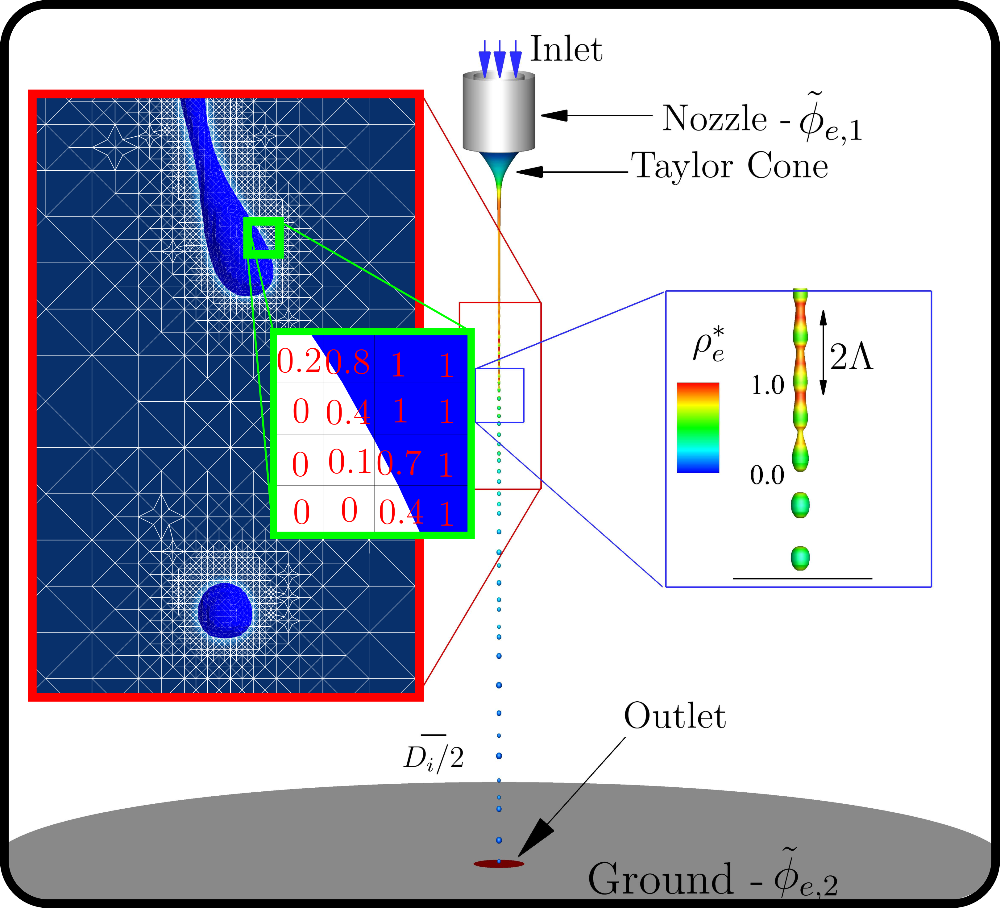
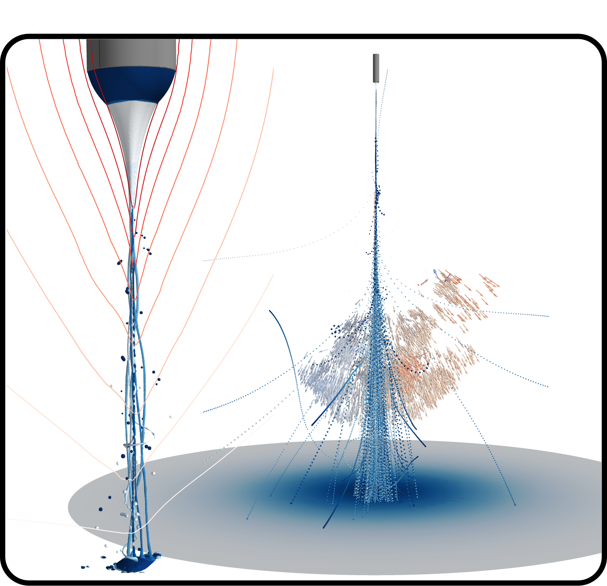
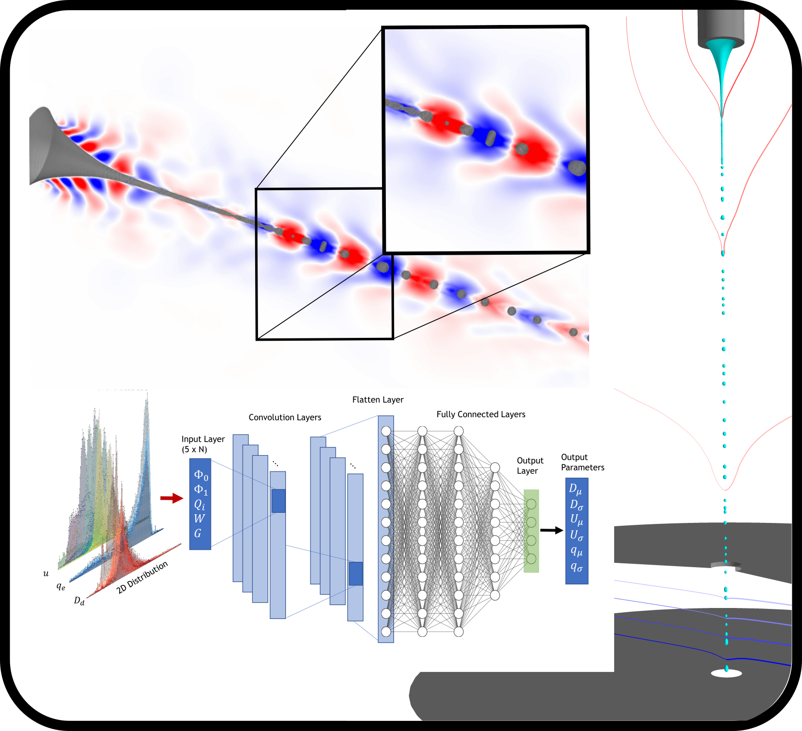

Welcome!
This website presents a summary of the results developed as part of the doctoral thesis entitled "Study of the Atomization of Electrohydrodynamic Jets - Modelling, Performance and Applications", submitted for evaluation in Mechanical Engineering at the University of Beira Interior. The work was developed by Sílvio Cândido, under the supervision of José C. Páscoa. The research was supported by grant no. 2020.04517.BD from the Foundation for Science and Technology and by the Center for Mechanical and Aerospace Science and Technologies.
Overview
This work is divided into three main parts: Modelling, Performance and Applications of Electrohydrodynamic Jets.
-

Modelling
This chapter describes in detail the different methods used to calculate the two-phase flow of electrohydrodynamic jets. It covers topics such as the Finite Volume Method (FVM), the Volume of Fluid method (VoF) and Lagrangian Particle Tracking (LPT).
-

Performance
The numerical model is extensively tested under different operating regimes, including axisymmetric jets, the development of three-dimensional instabilities and plume formation.
-

Applications
In this chapter, the numerical model is used in two proposed applications. The first concerns the use of POD/DMD reduced-order models to create digital twins of EHD jets. The second investigates an acceleration grid for application in colloid microthrusters.
Acknowledgements
This work was supported by Portuguese funds from the Foundation for Science and Technology, FCT, through the individual doctoral grant no. 2020.04517.BD. The initial results were also supported by a research grant within the INDTECH 4.0 Project - New Technologies for Intelligent Manufacturing, POCI-01-0247-FEDER-026653. The entire work was supported by the Portuguese research centre Center for Mechanical and Aerospace Science and Technologies - UIDB/00151/2020, Portugal.